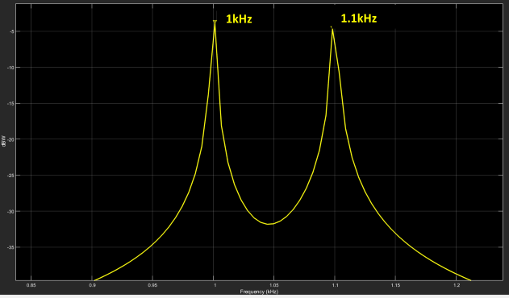

Abstract
This work aims to study the effects on signals whose frequencies are close to the Nyquist frequency (called sub-Nyquist). We will begin by analyzing the interaction between two analog signals and the effects that occur. Then, we will examine what happens in the digital domain between a signal and its proximity to the Nyquist frequency. The implications for the graphical representation of signals and their impact on D/A conversion for playback will be addressed.
1. Sum of Two Analog Signals
Suppose we have two analog sinusoidal signals and sum them. What result will we see on an oscilloscope screen? If the difference between their frequencies is large (say, more than 10 times), we will see the higher-frequency sine wave superimposed on the lower-frequency one.
But as this difference decreases, we will increasingly notice that the higher-frequency sine wave is “beaten” by the lower-frequency one.
In Fig 1, Fig 2, Fig 3, and Fig 4, the effects mentioned above can be observed.


It is interesting to note the effect that phase has on the sum of signals for both combinations. While it does not play a significant role when the frequency difference is large, it does when the frequencies are close, producing cancellations or reinforcements in the magnitude of the sum.
Note that the beat frequency is equal to the difference between the frequencies of both signals (in this case, 100Hz).[1][1]
In both cases, in a spectral analysis, I will see the two pure sinusoidal frequencies and nothing else.


Fig 5. Signal spectrum a) Scenario1, b) Scenario2
2. Beat in the Digital Domain
Now, suppose we have an analog signal and proceed to sample it for digitization. For the purposes of the demonstration, let’s take the following values:
- Signal frequency: 500 Hz
- Sampling frequency: 44.1kHz
In Fig 6, we can see that the sampled signal is perfectly aligned with the analog signal, showing no magnitude deviations.

Let’s repeat the process, but now with a frequency close to Nyquist frequency, for example, a signal frequency of 20 kHz.
In Fig 7, we can clearly observe a beat effect on the 20kHz signal. This looks very similar to the effect described in the previous section with two analog frequencies. But if we are working with only one frequency here… how can this be happening?
Let’s try to understand what’s going on in this case. I have an analog signal at the input of 20kHz, which, when sampled at a rate of 44.1kHz and then converted back to analog[2][2], appears as a 20kHz signal but with a beat of 4.1kHz. Everything would suggest that, based on what we saw earlier, there should be another signal “modulating” the input to produce the modulated signal. Let’s confirm this with a spectrum analyzer.

Undoubtedly, Fig 9 only shows the presence of a single signal! This doesn’t seem to make much sense. There is only one signal present in the spectrum, however in the time domain it shows clear signs of amplitude modulation (beat) that could only occur if another signal were interacting.
So, what’s going on?
3. Sample Distribution in a Signal
Let’s suppose we sample a signal of frequency F at a sampling rate Fs. If \( F_s = 3F\), we’ll have 3 samples per signal cycle, which always occur at the same phase of the waveform. That is, a periodic pattern is created.

And if we do the same, but now with \( F_s = 5F\), there would be 5 samples per signal cycle, with the same characteristics as the previous signal, as can be seen in the following figure.

One particularity of the examples just mentioned is that the number of samples per signal cycle is invariant. This means that, for example, in \( F_s = 3F \), there will be 3, and only 3, samples in any signal cycle. I won’t find cycles with 2, 4, or any other value different from 3. In other words, there is a relationship between F and Fs that we can represent with the following equation:
\[ {\large F = \frac{1}{n} \cdot F_s } \]Again, this means that every 1 cycle, I will have “n” (2, 3, 4, etc.) and only “n” samples. No more, no less.
We can generalize the formula and rewrite it as:
Here, m indicates the number of cycles in which I will find a number of n samples. For example, if the ratio were \( \large\frac{2}{5} \), it would mean that in 2 signal cycles, I will find exactly 5 samples.[3][3]
But there is another characteristic that has a very important consequence: those n samples occur at the same phases of the signal every m cycles. Following the previous example, the samples will fall at the same phase of the signal every 2 cycles.
But where are we going with this? What does it have to do with what I see on the screen? A little more patience, and we’re getting closer.
4. Cyclic Patterns
Now, let’s add one last parameter to the formula, called ε, so that it looks like the following equation:
\[ {\large F = \frac{m}{n} \cdot F_s - {\Large \varepsilon}} \]What does this modification achieve? It eliminates the fixed positioning characteristic of the samples within the signal cycle. Although there will still be n samples every m cycles, their location within the signal will vary across cycles.
And will the samples ever fall at the same phase of the wave again? In other words, is there a frequency at which the cycle repeats? The answer is yes, and that is precisely the value ε.
Let’s see the graphs of some examples:
In Fig 11, we can observe the distribution of the samples “forming” sinusoidal waves whose number corresponds to the value of the factor “n” and with a frequency of value ε.
In other words, in the formula\( F = {\large \frac{F_s}{2}} - 20 \), 2 waves will be formed; in \( F = {\large \frac{F_s}{3}} - 20 \), 3 waves; and in \( F = {\large \frac{F_s}{5}} - 20 \), 5 interwoven waves. All of them have a frequency of 20 Hz (as is the value of ε).
Note that these waves are the product of a graphical distribution of the signal’s samples, and all have a frequency of ε Hz. This means that ε is the frequency at which the samples occur again at the same phase of the signal. It’s easy to see that if ε=0, the variation frequency is 0, and therefore, the samples always occur at the same phase of the signal.
5. Reconstruction Process
It’s striking that, if I wanted to reconstruct the signal by connecting the samples, I wouldn’t be obtaining the same original signal. As seen in Fig 12, if I apply the sampling process to a pure sinusoidal signal (A/D) and then reconstruct the signal (D/A) by connecting the samples, I would arrive at a sinusoidal signal with a beat, which obviously is not the same as the original signal. But this is a direct contradiction to the Nyquist theorem, which states that if I sample at a rate greater than twice the maximum frequency present, I could reconstruct the original signal exactly.

The explanation lies in how the analog signal is reconstructed from its samples. The interpolation process involves reconstructing the signal’s value between samples, and this is not achieved by simply “connecting” the samples graphically. There are various ways to “connect” (interpolate) samples graphically. For example, one could do it linearly (straight line), through an Nth-order polynomial (curve), or some other type.[4][4][5][5] But those methods do not reconstruct the original signal exactly.
The theoretical method to fully recover an analog signal (i.e., without losses) is through a convolution process between the samples and the SINC function. It is beyond the scope of this work to explain the reconstruction (interpolation) process in detail, but we can think of it as follows: If I wanted to recover a frequency-limited signal (that meets Nyquist requirements), I could filter it with a low-pass filter to keep the frequency band below \( \frac{F_s}{2} \) and reject all spectral components above it. In Fig 13, we can see the process.
The mechanism of this filtering process, when viewed from the time domain (always remembering the frequency-time duality), would mean a convolution between each sample and the SINC function, which is the time-domain representation of an ideal low-pass response.
In theory, this process achieves perfect reconstruction. But the problem arises in the impossibility of its implementation, as the SINC function extends from \(-\infty \) a \( +\infty \). Since this is not practical, we must truncate it in time. This temporal truncation of the function will have an impact in the frequency domain, causing the low-pass filter’s response to no longer be ideal, which introduces “distortions” in the reconstruction of the analog signal. And it is precisely these errors that make the reconstructed signal more or less similar to the original.
6. Is the Effect Real?
Having understood the reason for the “strange” shapes we see in the reconstruction of certain frequencies, it’s worth asking whether this is a real effect or merely a visual one. The answer is that this effect is as real as digital audio itself, so it is not just a visual perception but also an auditory one.
Proving this is not difficult. Simply create a session at an audible Nyquist frequency, generate a sinusoidal signal (or any periodic signal), and listen. For example, we can test with an Fs = 8000Hz and use a generator to create sine waves at F = 3998 Hz and F=3999Hz.
Having come this far (and hopefully understood the explanation)… what would you expect to hear? (4-second audio clips, be careful with the volume)
7. Impact on Digital Audio
But if this is the case… why isn’t everything we hear through digital audio a complete disaster?
Well, there are two important aspects to consider in the explained process:
1) This, while not exclusive, is noticeable in periodic signals. The beat effect is evident when there are periodic repetitions of samples in the signal cycles (as explained in section 4).
2) The effect is extremely noticeable at frequencies very close to Nyquist and loses impact as I move away from it. If my Nyquist frequency is 22050 Hz, the effect begins to fade from 20 kHz downward. In other words, these are high frequencies for the average human hearing.[6][6]
In Fig 15, we can see the impact in relation to the analog frequency being sampled. As the frequency F moves away from \({\large\frac{F_s}{2}}\), the effect diminishes (the beat loses intensity).
For these reasons, although it is curious to see it on DAW screens, this effect is not a problem for the purpose of digital audio.
Appendix I: Measurements
Below are the measurements taken at the output of a Universal Audio sound card, model: Apollo Twin. The measurement instrument used was a Tektronix TBS 1052B, at different sampling and signal frequencies.
The measurement process consisted of generating sine waves at different frequencies and measuring the analog audio output of the sound card. This is what the speakers will actually reproduce.

The beat can be observed at a frequency of 2 Hz. Note that the frequency of each component is 1 Hz.
The beat can be observed at a frequency of 10 Hz. Note that the frequency of each component = 5 Hz.

No significant beat can be observed. It is confirmed that moving away from the Nyquist frequency reduces the beat effect.
The impact can be observed for the same frequency at different sampling frequencies.
For 88200Hz, the impact is negligible, while for 44100Hz, it is noticeable.
Appendix II: Product of Two Analog Signals
According to the trigonometric identity:

we can create the same beat effect, but by multiplying sinusoidal signals (instead of adding them) by modifying the frequencies to comply with this identity.[7][7] In our example of A=1000Hz and B=1100Hz, the new frequencies to achieve the same effect would be:
\( F_1 ={\large \frac{A + B}{2}} = 1050\,\text{Hz} \)
\( F_2 ={\large \frac{A - B}{2}} = 50\,\text{Hz} \)
Fig 20. Beat effect through the product of signals
Note that the beat frequency remains 50Hz (as in the sum example), which is precisely the frequency of the modulator.
Apéndix III: Interpolation Process of a Sampled Signal.
It has been mentioned that even when the Nyquist criterion is satisfied, the signal reconstruction will still be imperfect due to the need to truncate the SINC function during the convolution process. We have also noted that this phenomenon becomes more noticeable at frequencies close to Nyquist, and that as we move further away from it, the effect gradually diminishes.
Below, three plots are presented to illustrate how extending the duration of the SINC function significantly improves the reconstruction quality.[8][8]


a) SINC_span=+/- 50 msec; b) SINC_span=+/- 500 msec ; c) SINC_span=+/- 5 sec
The example presented corresponds to \( F = 48\,\text{Hz} \) y \( F_s = 100\,\text{Hz} \). Although these values are not applicable in audio contexts, they are perfectly valid for demonstrating the effect under study.
References
[1] The beat frequency is the difference between both signals. However, if we think of the beat as two interwoven waves, the frequency of each component is double, i.e, 200Hz in this case. This will be different in subNyquist effect will see in the next sections.
[2] Matlab’s interpolation method is linear, which is why we see straight lines connecting the samples.
[3] Remember that the value must always be \(\large \frac{m}{n} \) ≤ 0.5 to satisfy the Nyquist criterion.
[4] There are several interpolation methods such as Lagrange (order N), cubic splines (3rd order), Bezier splines, etc.
[5] Some software allows choosing the graphical interpolation mode (e.g., Ozone RX).
[6] Additionally, the beat is only perceived if its frequency is very low (no more than 15 Hz).
[7] This is the principle used in the amplitude modulation (AM) process. A low-frequency modulating signal (e.g., voice) modulates a much higher-frequency carrier for transmission.
[8] These results are derived from a simulation, yet they clearly reflect the theoretical concept. Obviously, this cannot be directly translated to the real world, as in D/A converters this duration is not adjustable.
Software and Hardware Used
The simulations carried out in this work were developed in MATLAB™.
Universal Audio sound card, Apollo Twin™.
Tektronix™ TBS 1052B measurement instrument.
Bibliography
- “Sub-Nyquist artefacts and sampling moiré effects” - Isaac Amidror, Ecole Polytechnique Fédérale de Lausanne (EPFL), Feb. 2015
- “Analyzing the Sampling-Induced Beat Frequency Effect” - Kerry Schutz – Mathwork, Oct 2021
- “Bandlimited Interpolation” – Julius O. Smith III - CCRMA – Stanford Univ, 2016 May
- “Modern Sampling: A Tutorial”. Jamie A.S. Angus – AES Vol 67, No 5, 2019 May
Author: Pablo Panitta / Soundins
Contact: soundinsda@gmail.com